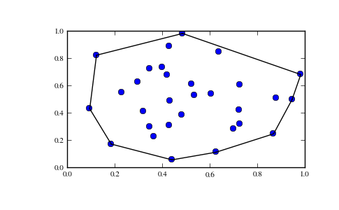

scipy.spatial.ConvexHull¶
- class scipy.spatial.ConvexHull(points, furthest_site=False, qhull_options=None)¶
Convex hulls in N dimensions.
New in version 0.12.0.
Parameters : points : ndarray of floats, shape (npoints, ndim)
Coordinates of points to construct a convex hull from
incremental : bool, optional
Allow adding new points incrementally. This takes up some additional resources.
qhull_options : str, optional
Additional options to pass to Qhull. See Qhull manual for details. (Default: “Qx” for ndim > 4 and “” otherwise) Option “Qt” is always enabled.
Raises : QhullError :
Raised when Qhull encounters an error condition, such as geometrical degeneracy when options to resolve are not enabled.
Notes
The convex hull is computed using the Qhull libary [Qhull].
References
[Qhull] (1, 2, 3) http://www.qhull.org/ Examples
Convex hull of a random set of points:
>>> from scipy.spatial import ConvexHull >>> points = np.random.rand(30, 2) # 30 random points in 2-D >>> hull = ConvexHull(points)
Plot it:
>>> import matplotlib.pyplot as plt >>> plt.plot(points[:,0], points[:,1], 'o') >>> for simplex in hull.simplices: >>> plt.plot(points[simplex,0], points[simplex,1], 'k-') >>> plt.show()
Attributes
points (ndarray of double, shape (npoints, ndim)) Points in the convex hull. simplices (ndarray of ints, shape (nfacet, ndim)) Indices of points forming the simplical facets of the convex hull. neighbors (ndarray of ints, shape (nfacet, ndim)) Indices of neighbor facets for each facet. The kth neighbor is opposite to the kth vertex. -1 denotes no neighbor. equations (ndarray of double, shape (nfacet, ndim+1)) [normal, offset] forming the hyperplane equation of the facet (see [Qhull] documentation for more). coplanar (ndarray of int, shape (ncoplanar, 3)) Indices of coplanar points and the corresponding indices of the nearest facets and nearest vertex indices. Coplanar points are input points which were not included in the triangulation due to numerical precision issues. If option “Qc” is not specified, this list is not computed. Methods
add_points(points[, restart]) Process a set of additional new points. close() Finish incremental processing.